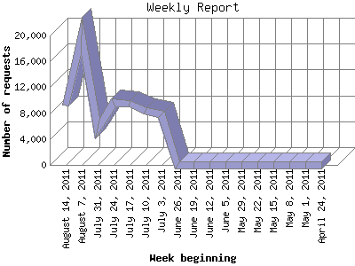

The Weekly Report identifies the activity for each week within the report
time frame. Remember that one page hit can result in several server requests
as the images for each page are loaded.
Note: Depending on the
report time frame for this report the first and last week may not represent
a full seven day week, resulting in lower hits.

| Week beginning | Number of requests | Number of page requests | |
|---|---|---|---|
| 1. | April 24, 2011 | 12 | 12 |
| 2. | May 1, 2011 | 32 | 32 |
| 3. | May 8, 2011 | 22 | 22 |
| 4. | May 15, 2011 | 18 | 18 |
| 5. | May 22, 2011 | 11 | 11 |
| 6. | May 29, 2011 | 11 | 11 |
| 7. | June 5, 2011 | 15 | 15 |
| 8. | June 12, 2011 | 14 | 14 |
| 9. | June 19, 2011 | 10 | 10 |
| 10. | June 26, 2011 | 21 | 21 |
| 11. | July 3, 2011 | 7,760 | 354 |
| 12. | July 10, 2011 | 8,401 | 366 |
| 13. | July 17, 2011 | 9,519 | 381 |
| 14. | July 24, 2011 | 9,582 | 220 |
| 15. | July 31, 2011 | 5,660 | 150 |
| 16. | August 7, 2011 | 19,963 | 949 |
| 17. | August 14, 2011 | 9,236 | 444 |
Most active week beginning August 7, 2011 : 949 pages sent. 19,963 requests handled.
Weekly average: 178 pages sent. 4,134 requests handled.
This report was generated on August 17, 2011 03:49.
Report time frame April 27, 2011 21:08 to August 16, 2011 23:44.
| Web statistics report produced by: analog 5.1 / Report Magic 2.21 |